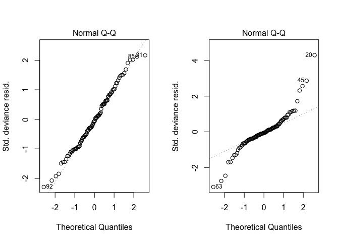
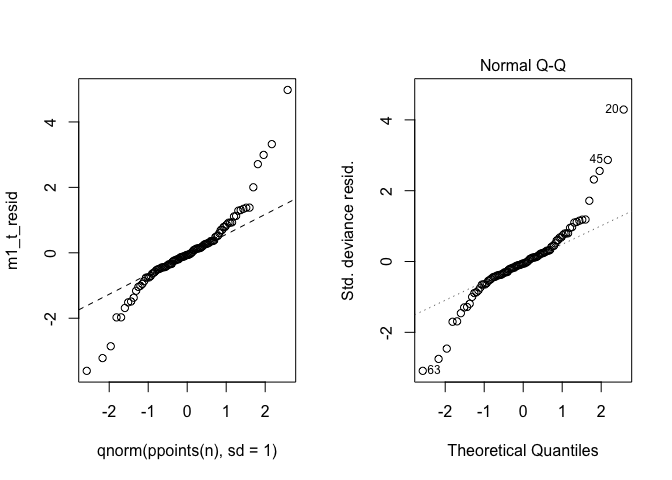
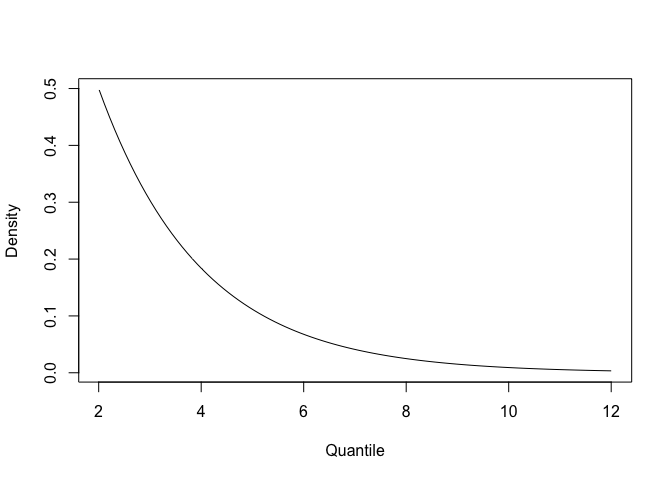
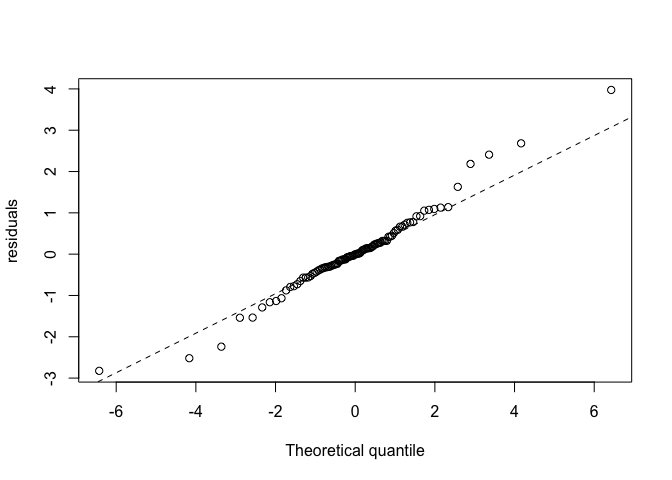

Checking residual distributions for non-normal GLMs
Quantile-quantile plots
If you are fitting a linear regression with Gaussian (normally distributed) errors, then one of the standard checks is to make sure the residuals are approximately normally distributed.
It is a good idea to do these checks for non-normal GLMs too, to make sure your residuals approximate the model’s assumption.
Here I explain how to create quantile-quantile plots for non-normal data, using an example of fitting a GLM using Student-t distributed errors. Such models can be appropriate when the residuals are overdispersed.
First let’s create some data. We will make a linear predictor (ie the true regression line) eta and then simulate some data by adding residuals. We will simulate two data-sets that have the same linear predictor, but the first will have normally distributed errors and the second will have t distributed errors:
n <- 100
phi <- 0.85
mu <- 0.5
set.seed(23)
x <- rnorm(n)
eta <- mu + phi * x
nu <- 2.5
tau <- 3
y_tdist <- eta + (rt(n, df=nu)/sqrt(tau))
y_normdist <- eta + rnorm(n, sd = 1/sqrt(tau))
plot(x, y_tdist)
points(x, y_normdist, col = "red", pch = 16, cex = 0.8)
legend("topleft", legend = c("t-distributed errors", "normally distributed errors"), pch = c(1,16), col = c("black", "red"))
Notice how the t-distributed data are more spread out. The df parameter, here named nu=2.5 controls how dispersed the data are. Lower values will give data that are more dispersed, large values approach a normal distribution.
Now let’s fit a Gaussian glm (just a linear regression really) to both these data-sets
m1_norm <- glm(y_normdist ~ x)
m1_t <- glm(y_tdist ~ x)We should check whether the two models meet the normal assumption, using the standard ‘qq’ (quantile-quantile) plot:
par(mfrow = c(1,2))
plot(m1_norm, 2)
plot(m1_t, 2)
These plots compare the theoretical quantiles to the actual quantiles of the residuals. If the points fall on the straight line then the theoretical and realised are very similar, and the assumption is met. Clearly this is not the case for the second model, which is overdispersed.
We know it is overdispersed because the theoretical quantiles are much smaller than the actual at the tails (notice how the ends down then up).
The p-values (or CIs if you use them) for m1_t are therefore likely biased and too narrow, leading potentially to type I errors (us saying that x affects y, which in fact it does not). In this case we know we haven’t made a type I error, because we made up the data. However, if you were using real data you wouldn’t be so sure.
Doing our own quantile-quantile plot
To better understand the QQ plot it helps to generate it yourself, rather than using R’s automatic checks.
First we calculate the model residuals (in plot(m1_t) R did this internally):
m1_t_resid <- y_tdist - predict(m1_t)Then we can plot the quantiles for the residuals against theoretical quantiles generated using qnorm. Below we also plot the original QQ plot from above, so you can see that our version is the same as R’s automatic one:
par(mfrow = c(1,2))
qqplot(qnorm(ppoints(n), sd = 1), m1_t_resid)
qqline(m1_t_resid, lty = 2)
plot(m1_t,2)
I added the qqline for comparative purposes. It just puts a line through the 25th and 75th quantiles.
QQ plot for a non-normal GLM
Now we have learned how to write our own custom for a QQ plot, we can use it to check other types of non-normal data.
Here we will fit a GLM to the y_tdist data using student-t distributed errors. I do this using the Bayesian package INLA.
library(INLA)
data <- list(y=y_tdist, x = x)
mod_tdist <- inla(y ~ x, family="T", data=data,
control.predictor = list(compute = TRUE),
control.family =
list(
hyper =
list(prec = list(prior="loggamma",param=c(1,0.5)),
dof = list(prior="loggamma",param=c(1,0.5))
)
)
)The family ="T" command tells INLA to use the t-distribution, rather than the Normal distribution. Note also I have specified the priors using the control.family command. This is best practice. We need a prior for the precision (1/variance) and a prior for the dof (= degrees of freedom, which has to be >2 in INLA).
It is sometimes help to visualise the priors, so we can check too see they look sensible. Here we visualise the prior for the dof, (which in INLA has a min value of 2):
xgamma <- seq(0.01, 10, length.out = 100)
plot(xgamma+2, dgamma(xgamma, 1, 0.5), type = 'l', xlab = "Quantile", ylab = "Density")
We don’t really expect values much greater than 10, so this prior makes sense. If we used an old-school prior that was flat in 2-1000 we might get issues with model fitting.
Now enough about priors. Let’s look at the estimated coefficients:
mod_tdist$summary.fixed
## mean sd 0.025quant 0.5quant 0.975quant mode
## (Intercept) 0.5324814 0.07927198 0.3773399 0.5321649 0.6891779 0.5315490
## x 0.7229362 0.08301006 0.5565746 0.7239544 0.8835630 0.7259817
## kld
## (Intercept) 3.067485e-12
## x 6.557565e-12Good the CIs contain our true values, and the mean is close to our true value too. What about the hyper-parameters (the precision and DF)? We need to get INLA to run some more calucations to get accurate estimates of these:
h_tdist <- inla.hyperpar(mod_tdist)
h_tdist$summary.hyperpar[,3:5]
## 0.025quant 0.5quant 0.975quant
## precision for the student-t observations 0.2663364 0.6293265 1.163440
## degrees of freedom for student-t 2.2404966 2.7396391 4.459057The estimate for the DF might be a ways off the mark. That is ok, we expect that, you need lots of really good data to get accurate estimates of hyper-parameters.
Now, let’s use our skills in creating QQ plots to make QQ plot using theoretical quantiles from the t distribution.
First step is to extract INLA’s predictions of the data, so we can calculate residuals
preds <- mod_tdist$summary.fitted.values
resids <- y_tdist - preds[,4]Next step is to extract the marginal estimates of the DF and precision to use when generating our QQ plot (the quantiles will change with the DF):
tau_est <- h_tdist$summary.hyperpar[1,4]
nu_est <- h_tdist$summary.hyperpar[2,4]Now we can use qt() to generate theoretical quantiles and the residuals for our realised quantiles:
qqplot(qt(ppoints(n), df = nu_est), resids * sqrt(tau_est),
xlab = "Theoretical quantile", ylab = "residuals")
qqline(resids * sqrt(tau_est), lty = 2)
Note that I multiply the residuals by the sqrt of the precision estimate. This is how INLA fits a t-distributed GLM. I do the same for the qqline.
Our residuals are now falling much closer to the line. The model is doing a much better job of fitting the data. You could also calculate the WAIC for this model and a Gaussian one, to compare the fits. The t-distributed GLM should have a lower WAIC (better fit).
We can now be confident that our CIs are accurate.